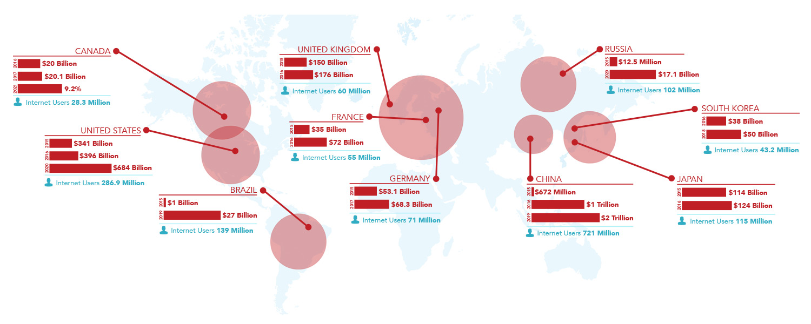

The Importance of Data Aggregation for Optimal Risk Controls.
Article - December 4th, 2018 by Ingo Ernst - CEO, 4Stop
A look at industry-wide objectives to support our growing payment eco-system and its growing associated risk management. Specifically in how we can improve the speed of merchant set-ups, how quickly we can have quality merchants in the pipeline and how quickly we can verify directors and businesses, to their associated customers and transactions.
How do we, as an industry, automate this process, to the point where your time is down to minutes, seconds or instant. How do we get there? How do we go to instant?
Ultimately the only way we can currently onboard merchants, directors, customers and then verify every transaction is by having good data.
If I can say that this is John Doe and John Doe lives here and that is his ownership and that is his business, that is his house, that is his credit rating, here’s his contact details, here’s what he spends money on, here’s his investments, here’s everyone who has invested in him and everything else in-between.
When we have all those data points, that we can check every one of them, we know that this is John Doe and we know whether we are very comfortable or uncomfortable with him and the business he is a director within.
If that process is instant, then us denying or accepting a merchant, business or customer is also instant.
However, right now the verification process on a business or director could still be minutes or hours. And if we are all real with one another a lot of times, even though we might have one part of the process automated, there are other manual processes or lack of data received that impact the turnaround times. If further due diligence is required or enhanced director KYC performance the process can easily become days or weeks and as industry we all know it can sometimes take months.
This is not something that is unheard of in the financial world, but what we are talking about is automating it down to getting businesses onboarded, directors onboarded and their customers instantly. All while ensuring transactions are being processed through the system as good, efficient and accurate as possible, all of the time.
And merchants have changed…
Facilitating eCommerce in a world now where everyone is capable of being a merchant and everyone expects instant results.
Merchants Today Have...
- Have high expectations
- Place high value in experience that reflects their brand perception and trust
- Ability to sign up and be approved for card acceptance in just a few minutes or instant - like an end customer
- They want a plug-in-play experience and their risk and fraud effortlessly managed
- Reactive support and clear communications
Nowadays there are thousands, upon thousands, upon thousands of data points – almost everything is available online.
When I began my career within risk management, we only had a couple of options. The few data points we did have were fully integrated and the rest was manual. However in today’s payment processing, you can’t do, what I first started in risk going from one data point here to this company and person here and then feed that through to a back-end for a human intervention in order to validate and verify a business, registration or transaction.
Our payment eco-system is growing much to rapidly for that.
FRAUD PREVENTION GROWTH
Merchant monitoring and anti-fraud will reach US$600 Million by 2020.
KYC REQUIREMENT GROWTH
KYC resources were $150M in 2017 with an expected 13% growth this year.
GLOBAL COMPLIANCE GROWTH
Expanding regulatory requirements put demand on KYC performance.
However, implementing thousands of new data solutions at say $10K per solution entry to have reserve on account or access to data simply puts too much strain on individual businesses resources, costs and impacts overall performance.
So what should we turn towards as an industry to speed up set-up times, to fully automate our access to global data points to efficiently verify businesses with their directors and customers? How do we get to the point of instant results?
That’s through data and utilizing data aggregation specialists. The only way that you can have that much data at your fingertips all of the time, is if you’re aggregating your global data points constantly.
Merchants, business, consumers, transactions, it’s all the same and even though validating, verifying and authenticating each of these varies tremendously, the reality is for a transaction to run efficiently around the world, you need a wild assortment of different data points to be called upon in a certain manner and to be as fluid as they can be. The only way you can do that, without integrating thousands of data points putting strain on your IT development resources and impacting your business performance is through data aggregation. Where as a business, you’ve done nothing but a single end-point integration, but data is being aggregated for you continuously.
Improving automation and accuracy all of the time. Allowing you to maximise your conversions, retentions and profitability by merchant and increase your penetration.
Onboarding Set-Up Times Dramatically Decreases
Minimal Integrations & Resources Required
Easily Manages Global Regulations
Manages On-going Checks Requirements
Data Aggregation Solves So Many Industry Risk Management Pain Points. Most importantly, it allows maximum merchants onboarded to secure your revenue retention.
Improving your authorization rates from 72% to 76% or 83% to 88% is really difficult. You’re bringing on more risk, which brings on banking risk. But to take the industry to the point that you can dramatically increase your authorization rates from 72% to 85% or 84% to 97% with each of those percent’s being incredibly impactful from not only what the business is making, but from the risk exposure and the customers its retaining.
Data aggregation allows you to maximise your conversions, retentions and profitability by merchant and penetration. So once you’re into a business or a customer, you can give them more, penetrate further into their business. Obtain more of their traffic and engagement.
- Instantly speeds up time to verify and onboard
- Provides in-depth data enriched experiences
- Improves accuracy of verifications
- Dramatically reduces internal resources required
- Eliminates the drain on IT development teams
- Compliance regardless of regulatory expansions
- Generates data back-ups without multiple integrations
- Enables growth and expansion globally instantly
- Reduces risk exposure and combats fraud
- Effortlessly manages on-going verifications
- Accelerates conversations and approval rates
- Improves merchants life-time value
Utilizing data aggregation not only secures your onboarding and transactions but provides you with thousands upon thousands of data responses. Automation is still key to manage the digestion of data.
Whether you manage the data in-house which may still bring IT infrastructure challenges, manual processes and fraud mitigation delays or you chose to integrate into an automated risk management technology platform, regardless of the method selected the goal is to automate that data analysis. Having all your data points returning back into a single view of risk manner with real-time results dramatically improve your reaction times, reduce overall resources required and reduce the time it takes to onboard and verify.
If we have a billion data points globally available to us, how are we getting that data to be relevant, digestible and usable within the business risk model processes? How do we disseminate this information, how do we trust it, how do we know it’s real and then how do you as a business, put your business in minimal risk, approve more merchants, customers, and transactions?
Data aggregation is where the marketplace is going. There are quality data aggregation companies around the world and from a risk management perspective there is no way to stay abreast of global data points and what data is relevant, unless… It is at the utmost focus of what you do and specialize in.


At 4Stop We Get Data.
Providing Premium Data Aggregation
Be believe in creating an all-in-one solution that would future-proof businesses KYC, compliance and fraud prevention processes, regardless of our ever-evolving payment and regulatory eco-system.
Our technology allows you to instantly access thousands of global data points and hundreds of KYC data sources in a fully automated and on-demand manner.
Contact a sales representative today or request a personalised 1:1 demo to learn more.
 Follow us
Follow us